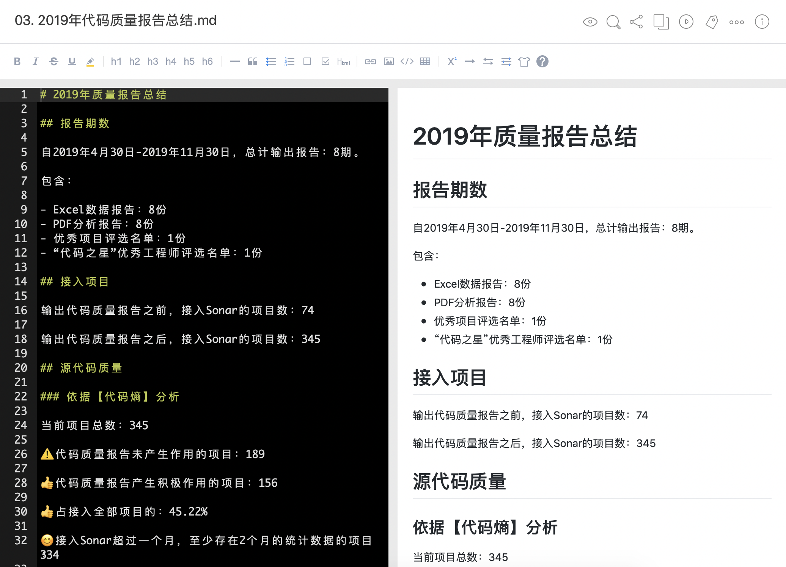
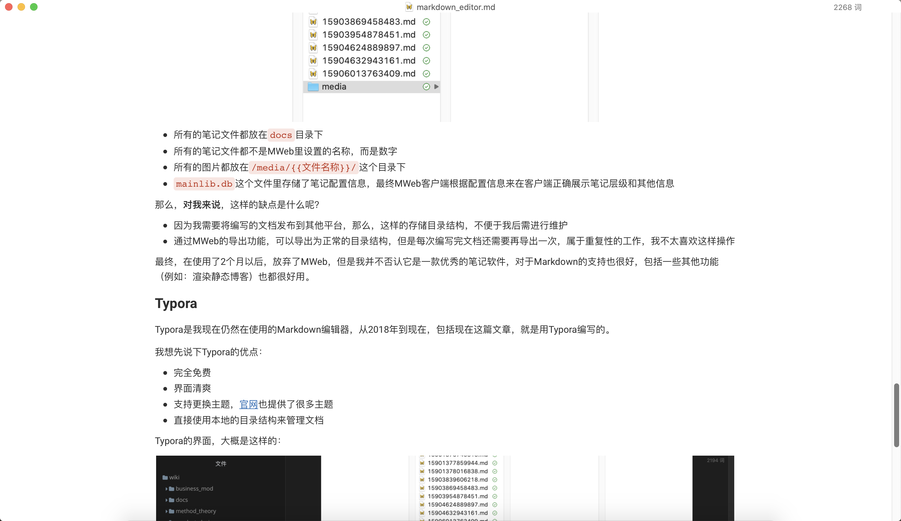

Markdown编辑器
开始之前
之前有段时间，对Markdown十分沉迷，甚至都出现了偏执，当时在我看来，任何的文字编写类工具，只要不支持Markdown，就都不是合格的文字编写工具。
在这之前，我一直使用Typora作为Markdown编辑器，而当时出现这种偏执情况后，我便开始近乎疯狂地寻找并使用各种Markdown编辑器，我当时的需求大概如下：
P0支持MarkdownP1支持云端同步P2文字编写界面主题清爽/好看
然后，我找了各种各样的Markdown工具来使用。
最终，直到现在，我还是使用的Typora，但是我觉得有必要将这个过程和过程中使用过的各种工具进行记录和对比。
调研对象
在整个过程中，我把我能找到的Markdown编辑器都使用了一遍，这里我只列举我认为比较有代表性/我使用时间较长的工具：
使用感受
文本编辑器
我之所使用文本编辑器来编写Markdown，是因为在寻找市面上专业编辑器一段时间后，没有找到十分满意的编辑器，然后心里产生了挫败感，于是我就想：不如回归简单，就用最原始的文本编辑器来编写Markdown。
说实话，这个方案不是不行，只是会比较麻烦，我遇到的问题大概如下：
- 无法预览效果，语法错误不能及时发现
- 新建的文件都是
.txt格式，每个文件都需要手动修改扩展名为.md - 编写感受不好，因为都是直接看到Markdown源码
当时使用文本编辑器来编写Markdown的时候，看到的界面大概就是下面这个样子：

对于文本编辑器编写Markdown，我最后的感受就是：
- 可用
- 体验较差
- 多文件编写效率较低、管理不方便
有道云笔记
有道云笔记是一个个人云笔记软件，它的定位并不是Markdown编辑器。
我之所以使用有道云笔记来编写Markdown，是因为它本身支持创建Markdown格式的笔记，加之我之前一直使用有道云笔记来管理自己的知识，所以，为了工具统一，我也就使用有道云笔记来编写Markdown。
有道云笔记的的Markdown编写界面大概像下面这样：

目前大部分号称支持Markdown的笔记软件、大部分Markdown编辑器的界面，都跟有道云笔记的这个界面类似：
- 左边是编辑界面，用于编写Markdown源码
- 右边是预览界面，只能查看，不能编辑
- 顶部提供了一个快捷键，如果不清楚Markdown语法可以直接使用
我最终没有使用有道云笔记作为Markdown编辑器，因为，对我来说，有一些缺点是无法将就的：
- 我不喜欢这种左边编辑右边预览的界面，我不否认这种设计的好处和便利，只是我个人不太喜欢
- Markdown插入图片要使用有道云笔记的图床，然而图床属于
付费功能 - 编写完成的Markdown文件，也是保存在云端的，如果我需要发布到其他平台，我需要：
- 手动在本地创建目录
- 手动在本地创建Markdown文件/导出有道云里的Markdown文件到对应目录
- 如果是手动创建，那么我需要再把文件内容复制过去
综上，如果只是想使用Markdown来记笔记，也不在乎付费，那么我觉得有道云笔记是个不错的选择，但是，对我来说还是不太适用，因为我更多的是要把自己编写的Markdown文件发布到其他平台（公司内部/外部），所以最终也就放弃了有道云笔记。
Notion
关于Notion，我对它的定位是个人/团队只是管理工具，而不是纯粹的Markdown编辑器。
我使用Notion大概持续了半年多，因为Notion除了可以实现纯粹的知识管理以外，还可以通过数据库配置+页面展示配置，来实现诸如协作看板、RoadMap等各种场景。
Notion编写的文档，界面截图如下：

Notion支持使用Markdown语法来编辑文档，而且使用体验比较好，主要体现在：
- 使用Markdown语法编写文档，文档内容实时渲染为预览效果
- Notion对Markdown原生语法进行了改进，通过一些快捷命令可以快速插入图片、表格等
那我最终还是没有使用Notion作为长期使用的Markdown编辑器，也主要是因为以下一些问题：
- Notion在国内使用不太问题，经常遇到需要翻墙才能使用的情况
- Notion内的全部文档都是保存在云端的，因此，如果编写的Markdown文档需要发布到其他平台时，需要拷贝文档内容到其他平台
- Notion编写的文档内，如果插入了图片，那么图片会保存在亚马逊的S3服务上，这个导致：
- 在Notion预览文档时，图片加载速度较慢（国内）
- 将文档内容复制到其他平台时，图片无法被复制过去（Notion文档对图片的语法跟Markdown原生语法存在差异）
MWeb
在发现Mac上的有道云笔记客户端很难用以后，中间有一段时间我在寻找一个Mac上可以替代有道云笔记，并且支持Markdown的笔记软件，后来就发现了MWeb。
我使用MWeb大概有2个月，给我的感受是这样的：
- MWeb是把笔记软件保存在电脑本地的
- MWeb暴露给用户使用的界面，是一个纯个人知识管理/笔记软件的逻辑，用户无需关注文件在本地是如何存放的
- 如果将MWeb作为一款笔记软件，那它非常符合需求，使用体验也非常的好；但是如果要将它当做是Markdown编辑器，并且需要把它编写的文档发布到其他平台，那么就会很麻烦，这也是我最终放弃的他的原因
在介绍MWeb不适合做Markdown编辑器之前，我先说下MWeb在本地存储文件的逻辑，下图为MWeb在本地存储文件的目录：

- 所有的笔记文件都放在
docs目录下 - 所有的笔记文件都不是MWeb里设置的名称，而是数字
- 所有的图片都放在
/media/{{文件名称}}/这个目录下 mainlib.db这个文件里存储了笔记配置信息，最终MWeb客户端根据配置信息来在客户端正确展示笔记层级和其他信息
那么，对我来说，这样的缺点是什么呢？
- 因为我需要将编写的文档发布到其他平台，那么，这样的存储目录结构，不便于我后需进行维护
- 通过MWeb的导出功能，可以导出为正常的目录结构，但是每次编写完文档还需要再导出一次，属于重复性的工作，我不太喜欢这样操作
最终，在使用了2个月以后，放弃了MWeb，但是我并不否认它是一款优秀的笔记软件，对于Markdown的支持也很好，包括一些其他功能（例如：渲染静态博客）也都很好用。
Typora
Typora是我现在仍然在使用的Markdown编辑器，从2018年到现在，包括现在这篇文章，就是用Typora编写的。
我想先说下Typora的优点：
- 完全免费
- 界面清爽
- 支持更换主题，官网也提供了很多主题
- 直接使用本地的目录结构来管理文档
Typora的界面，大概是这样的：

当然，Typora也有一些缺点：
- 对于习惯使用云笔记的人来说，不太友好，因为所有的目录结构都以本地为准，需要使用者手动创建和维护
- 软件本身不支持笔记同步，只能自己通过Github/Onedrive来实现笔记的同步
特点对比
| 项目/工具 | 文本编辑器 | 有道云笔记 | Notion | MWeb | Typora |
|---|---|---|---|---|---|
| Markdown语法 | 不支持 | 支持 | 支持（改进版） | 支持 | 支持 |
| 文档层级 | 不支持 | 不支持 | 支持 | 支持 | 支持 |
| 目录结构 | 不支持 | 支持 | 不支持 | 支持 | 支持 |
| 本地存储 | 支持 | 不支持 | 不支持 | 不支持 | 支持 |
| 云端同步 | 不支持 | 支持 | 支持 | 不支持 | 支持 |
| 更换主题 | 不支持 | 不支持 | 不支持 | 不支持 | 支持 |
| 文档发布 | 不支持 | 分享 | 分享 | 发布静态文件 | 不支持 |
推荐方案
如果仅仅是作为Markdown编辑器的话，我个人推荐使用：Typora。
它就是一个很纯粹的Markdown编辑器，没有其他那些多余/复杂的功能，一切都是围绕Markdown编辑这个业务场景来展开的。
如果说需要一个支持Markdown的笔记软件，我会推荐Mweb，因为它对Markdown语法支持的比较好，而且从客户端导出笔记到本地也可以保持目录结构，这样也可以发布到其他平台（例如：Github）。